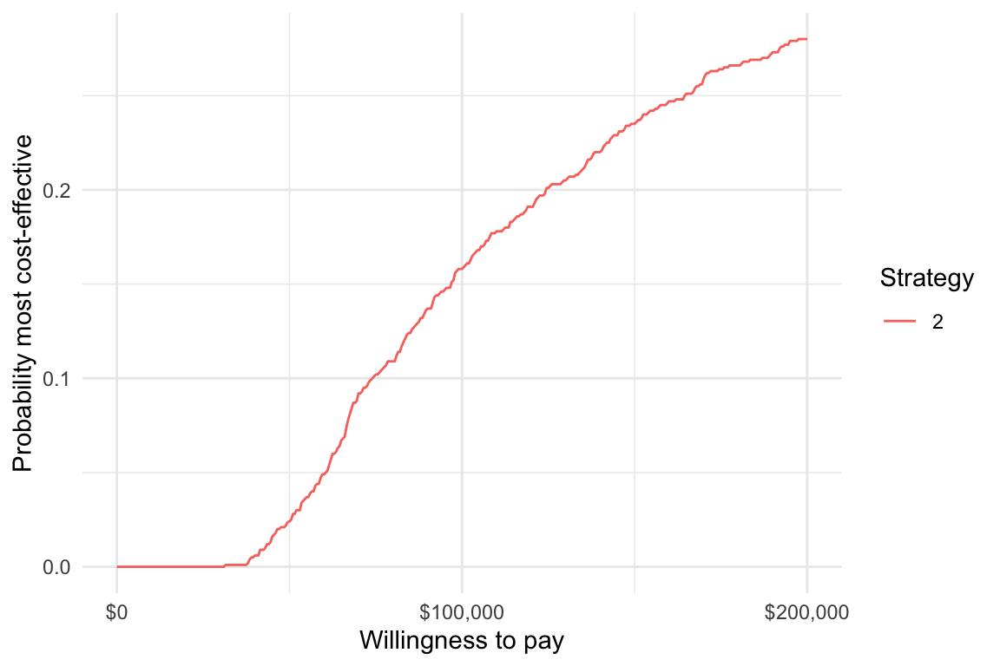

1 Overview
hesim supports three types of health-economic models: (i) cohort discrete time state transition models (cDTSTMs), (ii) N-state partitioned survival models (PSMs), and (iii) individual-level continuous time state transition models (iCTSTMs). cDTSTMs are Markov cohort models and can be time-homogeneous or time-inhomogeneous. iCTSTMs are individual-level simulations that can encompass both Markov and semi-Markov processes. All models are implemented as R6 classes and have methods for simulating disease progression, costs, and QALYs.
| Economic model | R6 class |
|---|---|
| N-state partitioned survival model (PSM) |
hesim::Psm
|
| Cohort discrete time state transition model (cDTSTM) |
hesim::CohortDtstm
|
| Individual-level continuous time state transition model (iCTSTM) |
hesim::IndivCtstm
|
Economic models can, in general, be created in two ways: first, with mathematical expressions using non-standard evaluation (note that this is currently only available for cDTSTMs), and, second, from specific statistical models. Each economic model consists of statistical models of disease progression, costs, and utilities. As shown in the figure, a typical analysis proceeds in a 3-step process:

- Parameterization: An economic model is parameterized by estimating statistical models for disease progression, costs, and utilities using “estimation” datasets, such as extracted data from published studies for a meta-analysis or multi-state survival data from a clinical trial.
- Simulation: The statistical models estimated in Step 1 are combined to construct an economic model. For a given model structure, disease progression, QALYs, and costs are simulated from “input data”, based on the target population and treatment strategies of interest.
- Decision analysis: Simulated outcomes from Step 2 are used to perform decision analysis using approaches such as cost-effectiveness analysis (CEA) and multi-criteria decision analysis (MCDA).
The entire analysis is inherently Bayesian, as uncertainty in the parameters from the statistical models is propagated throughout the economic model and decision analysis with probabilistic sensitivity analysis (PSA). Furthermore, since the statistical and economic models are integrated, patient heterogeneity can be easily introduced with patient level covariates.
2 Treatment strategies, target population, and model structure
Before beginning an analysis, it is necessary to define the treatment strategies of interest, the target population, and the model structure. This can be done in hesim by creating a hesim_data object with the function hesim_data(). Let’s consider an example where we use an iCTSTM to evaluate two competing treatment strategies. We will consider a model with three health states (healthy, sick, and dead) with four transitions (healthy -> sick, sick -> healthy, healthy -> dead, and sick -> dead). Since we are using an individual-level model, we must simulate a target population that is sufficiently large so that uncertainty reflects uncertainty in the model parameters, rather than variability across simulated individuals.
library("hesim") library("data.table") strategies <- data.table(strategy_id = c(1, 2)) n_patients <- 1000 patients <- data.table(patient_id = 1:n_patients, age = rnorm(n_patients, mean = 45, sd = 7), female = rbinom(n_patients, size = 1, prob = .51)) states <- data.table(state_id = c(1, 2), state_name = c("Healthy", "Sick")) # Non-death health states tmat <- rbind(c(NA, 1, 2), c(3, NA, 4), c(NA, NA, NA)) colnames(tmat) <- rownames(tmat) <- c("Healthy", "Sick", "Dead") transitions <- create_trans_dt(tmat) transitions[, trans := factor(transition_id)] hesim_dat <- hesim_data(strategies = strategies, patients = patients, states = states, transitions = transitions) print(hesim_dat)
## $strategies
## strategy_id
## 1: 1
## 2: 2
##
## $patients
## patient_id age female
## 1: 1 45.24137 1
## 2: 2 39.18220 0
## 3: 3 51.29155 1
## 4: 4 32.95895 0
## 5: 5 44.80957 1
## ---
## 996: 996 43.53718 1
## 997: 997 39.20537 0
## 998: 998 41.02570 1
## 999: 999 47.36196 1
## 1000: 1000 44.43412 1
##
## $states
## state_id state_name
## 1: 1 Healthy
## 2: 2 Sick
##
## $transitions
## transition_id from to from_name to_name trans
## 1: 1 1 2 Healthy Sick 1
## 2: 2 1 3 Healthy Dead 2
## 3: 3 2 1 Sick Healthy 3
## 4: 4 2 3 Sick Dead 4
##
## attr(,"class")
## [1] "hesim_data"3 Parameterization
3.1 Disease progression
As shown in the table below, the statistical model used to parameterize the disease model component of an economic model varies by the type of economic model. For example, multinomial logistic regressions can be used to parameterize a cDTSTM, a set of N-1 independent survival models are used to parameterize an N-state partitioned survival model, and multi-state models can be used to parameterize an iCTSTM.
| Economic model (R6 class) | Statistical model | Parameter object | Model fit object |
|---|---|---|---|
hesim::CohortDtstm
|
Custom |
hesim::tparams_transprobs
|
hesim::define_model()
|
| Multinomial logistic regressions |
hesim::params_mlogit_list
|
hesim::multinom_list
|
|
hesim::Psm
|
Independent survival models |
hesim::params_surv_list
|
hesim::flexsurvreg_list
|
hesim::IndivCtstm
|
Multi-state model (joint likelihood) |
hesim::params_surv
|
flexsurv::flexsurvreg
|
| Multi-state model (transition-specific) |
hesim::params_surv_list
|
hesim::flexsurvreg_list
|
Disease models can either be fit from an explicit statistical model or through mathematical expressions. In the first case, the easiest way to parameterize a disease model is by fitting a statistical model using R. For example, survival models and multi-state models can be fit using flexsurv::flexsurvreg() while multinomial logistic regressions can be fit with nnet::multinom(). In other cases, the disease models will not be fit directly with R, but the estimates of a disease model can be directly stored in parameter (hesim::params) or transformed parameter (hesim::tparams) objects. In the second case, an entire model (encompassing disease progression, costs, and utility) can be defined in terms of mathematical expressions with hesim::define_model().
We will illustrate an example of a statistical model of disease progression fit with R by estimating a multi-state model with a joint likelihood using flexsurv::flexsurvreg().
library("flexsurv") mstate_data <- data.table(mstate3_exdata$transitions) mstate_data[, trans := factor(trans)] fit_wei <- flexsurv::flexsurvreg(Surv(years, status) ~ trans + factor(strategy_id):trans + age:trans + female: trans + shape(trans), data = mstate_data, dist = "weibull")
3.2 Costs and utility
Costs and utilities can currently either be modeled using a linear model or using predicted means. The latter is an example of a transformed parameter object since the predicted means are parameters that are presumably a function of the underlying parameters of a statistical model and possibly input data.
| Statistical model | Parameter object | Model fit object |
|---|---|---|
| Predicted means |
hesim::tparams_mean
|
hesim::stateval_tbl
|
hesim::tparams_mean
|
hesim::define_model()
|
|
| Linear model |
hesim::params_lm
|
stats::lm
|
Linear models are fit using stats::lm(). Predicted means can be constructed from a hesim::stateval_tbl object or as a part of a model defined in term of mathematical expressions with define_model(). The former is a special object used to assign values to health states that can vary across treatment strategies, patients, and/or time intervals. State values can be specified either as moments (i.e., mean and standard error) or parameters (e.g., shape and scale of gamma distribution) of a probability distribution, or by pre-simulating values from a suitable probability distribution. Here we will use hesim::stateval_tbl objects for utility and two cost categories (drug and medical).
# Utility utility_tbl <- stateval_tbl(data.table(state_id = states$state_id, mean = mstate3_exdata$utility$mean, se = mstate3_exdata$utility$se), dist = "beta", hesim_data = hesim_dat) # Costs drugcost_tbl <- stateval_tbl(data.table(strategy_id = strategies$strategy_id, est = mstate3_exdata$costs$drugs$costs), dist = "fixed", hesim_data = hesim_dat) medcost_tbl <- stateval_tbl(data.table(state_id = states$state_id, mean = mstate3_exdata$costs$medical$mean, se = mstate3_exdata$costs$medical$se), dist = "gamma", hesim_data = hesim_dat)
4 Simulation
4.1 Constructing an economic model
An economic model consists of a disease model, a utility model, and a set of cost models for each cost category. The utility and cost models are always hesim::StateVals objects, whereas the disease models vary by economic model. The disease model is used to simulate survival curves in a PSM and health state transitions in a cDTSTM and iCTSTM.
| Economic model | Disease model | Utility model | Cost model(s) |
|---|---|---|---|
hesim::CohortDtstm
|
hesim::CohortDtstmTrans
|
hesim::StateVals
|
hesim::StateVals
|
hesim::Psm
|
hesim::PsmCurves
|
hesim::StateVals
|
hesim::StateVals
|
hesim::IndivCtstm
|
hesim::IndivCtstmTrans
|
hesim::StateVals
|
hesim::StateVals
|
Since economic models in hesim are inherently Bayesian, we must specify the number of parameter samples we will use for the PSA before constructing the model.
n_samples <- 1000
4.1.1 Disease model
Models are constructed as a function of parameters (or model fits) and in regression models, input data. The input data must be objects of class expanded_hesim_data, which are data tables containing the covariates for the statistical model. In our multi-state model, each row is a unique treatment strategy, patient, and health-state transition. The ID variables (strategy_id, patient_id, and transition_id) are stored as attributes of the dataset.
An expanded_hesim_data object can be created directly or by expanding an object of class hesim_data using expand.hesim_data(). Here, we will use the latter approach,
transmod_data <- expand(hesim_dat, by = c("strategies", "patients", "transitions")) head(transmod_data)
## strategy_id patient_id transition_id age female from to from_name
## 1: 1 1 1 45.24137 1 1 2 Healthy
## 2: 1 1 2 45.24137 1 1 3 Healthy
## 3: 1 1 3 45.24137 1 2 1 Sick
## 4: 1 1 4 45.24137 1 2 3 Sick
## 5: 1 2 1 39.18220 0 1 2 Healthy
## 6: 1 2 2 39.18220 0 1 3 Healthy
## to_name trans
## 1: Sick 1
## 2: Dead 2
## 3: Healthy 3
## 4: Dead 4
## 5: Sick 1
## 6: Dead 2attr(transmod_data, "id_vars")
## [1] "strategy_id" "patient_id" "transition_id"We can now construct the health state transition model, which creates an IndivCtstmTrans object that can be used to simulate health state transitions.
transmod <- create_IndivCtstmTrans(fit_wei, transmod_data, trans_mat = tmat, n = n_samples) class(transmod)
## [1] "IndivCtstmTrans" "CtstmTrans" "R6"4.1.2 Cost and utility models
Since we are using predicted means for costs and utilities, we do not need to specify input data. Instead, we can construct the cost and utility models directly from the stateval_tbl objects.
# Utility utilitymod <- create_StateVals(utility_tbl, n = n_samples) # Costs drugcostmod <- create_StateVals(drugcost_tbl, n = n_samples) medcostmod <- create_StateVals(medcost_tbl, n = n_samples) costmods <- list(drugs = drugcostmod, medical = medcostmod)
4.2 Simulating outcomes
Each economic model contains methods (i.e., functions) for simulating disease progression, costs, and QALYs. These methods are listed in the table below.
| Economic model (R6 class) | Disease progression | QALYs | Costs |
|---|---|---|---|
hesim::CohortDtstm
|
$sim_stateprobs() | $sim_qalys() | $sim_costs() |
hesim::Psm
|
$sim_survival() and $sim_stateprobs() | $sim_qalys() | $sim_costs() |
hesim::IndivCtstm
|
$sim_disease() and $sim_stateprobs() | $sim_qalys() | $sim_costs() |
Although all models simulate state probabilities, they do so in different ways. The cDTSTM uses discrete time Markov chains, the PSM calculates differences in probabilities from simulated survival curves, and the iCTSTM aggregates individual trajectories simulated using random number generation. The individual-level simulation is advantageous because it can be used for semi-Markov processes where transition rates depend on time since entering a health state (rather than time since the start of the model).
In the cohort models, costs and QALYs are computed as a function of the state probabilities whereas in individual-level models they are based on the simulated individual trajectories. Like the disease model, the individual-level simulation is more flexible because costs and QALYs can depend on time since entering the health state.
We illustrate with the iCTSTM. First we simulate disease progression for each patient.
ictstm$sim_disease() head(ictstm$disprog_)
## sample strategy_id patient_id grp_id from to final time_start time_stop
## 1: 1 1 1 1 1 3 1 0.000000 3.961930
## 2: 1 1 2 1 1 2 0 0.000000 2.894158
## 3: 1 1 2 1 2 1 0 2.894158 4.054487
## 4: 1 1 2 1 1 2 0 4.054487 5.730973
## 5: 1 1 2 1 2 1 0 5.730973 8.616221
## 6: 1 1 2 1 1 3 1 8.616221 21.159905The disease trajectory can be summarized with $sim_stateprobs().
## sample strategy_id grp_id state_id t prob
## 1: 1 1 1 1 0 1.000
## 2: 1 1 1 1 1 0.872
## 3: 1 1 1 1 2 0.773
## 4: 1 1 1 1 3 0.694
## 5: 1 1 1 1 4 0.650
## 6: 1 1 1 1 5 0.621We can then compute costs and QALYs (using a discount rate of 3 percent).
## sample strategy_id grp_id state_id dr qalys lys
## 1: 1 1 1 1 0.03 5.3945844 8.212078
## 2: 1 1 1 2 0.03 0.9624337 1.529198
## 3: 1 2 1 1 0.03 6.0550770 9.217534
## 4: 1 2 1 2 0.03 0.8130785 1.291890
## 5: 2 1 1 1 0.03 3.6778051 6.856649
## 6: 2 1 1 2 0.03 1.0513196 1.612748## sample strategy_id grp_id state_id dr category costs
## 1: 1 1 1 1 0.03 drugs 41060.39
## 2: 1 1 1 2 0.03 drugs 7645.99
## 3: 1 2 1 1 0.03 drugs 92175.34
## 4: 1 2 1 2 0.03 drugs 12918.90
## 5: 2 1 1 1 0.03 drugs 34283.24
## 6: 2 1 1 2 0.03 drugs 8063.745 Decision analysis
Once output has been simulated with an economic model, a decision analysis can be performed. Cost-effectiveness analyses can be performed using other R packages such as BCEA or directly with hesim as described in more detail here. hesim does not currently provide support for MCDA.
To perform a CEA, simulated costs and QALYs can be summarized to create a ce object, which contains mean costs and QALYs for each sample from the PSA by treatment strategy.
ce <- ictstm$summarize() print(ce)
## $costs
## category dr sample strategy_id costs grp_id
## 1: drugs 0.03 1 1 48706.38 1
## 2: drugs 0.03 1 2 105094.24 1
## 3: drugs 0.03 2 1 42346.98 1
## 4: drugs 0.03 2 2 107118.12 1
## 5: drugs 0.03 3 1 54183.54 1
## ---
## 5996: total 0.03 998 2 115601.06 1
## 5997: total 0.03 999 1 69646.69 1
## 5998: total 0.03 999 2 109124.82 1
## 5999: total 0.03 1000 1 71693.83 1
## 6000: total 0.03 1000 2 111508.05 1
##
## $qalys
## dr sample strategy_id qalys grp_id
## 1: 0.03 1 1 6.357018 1
## 2: 0.03 1 2 6.868155 1
## 3: 0.03 2 1 4.729125 1
## 4: 0.03 2 2 5.895107 1
## 5: 0.03 3 1 7.768545 1
## ---
## 1996: 0.03 998 2 8.348740 1
## 1997: 0.03 999 1 7.049546 1
## 1998: 0.03 999 2 6.047766 1
## 1999: 0.03 1000 1 6.695782 1
## 2000: 0.03 1000 2 5.660646 1
##
## attr(,"class")
## [1] "ce"The functions icea() and icea_pw, which perform individualized cost-effectiveness analysis and incremental individualized cost-effectiveness analysis, respectively, can be used.
icea <- icea(ce, dr_qalys = .03, dr_costs = .03) icea_pw <- icea_pw(ce, dr_qalys = .03, dr_costs = .03, comparator = 1)
For instance, we might want to plot a cost-effectiveness acceptability curve (CEAC) displaying the probability that treatment strategy 2 is more cost-effective than treatment strategy 1 at a given willingness to pay for a QALY.
library("ggplot2") ggplot2::ggplot(icea_pw$ceac, aes(x = k, y = prob, col = factor(strategy_id))) + geom_line() + xlab("Willingness to pay") + ylab("Probability most cost-effective") + scale_x_continuous(breaks = seq(0, 200000, 100000), label = scales::dollar) + theme(legend.position = "bottom") + scale_colour_discrete(name = "Strategy") + theme_minimal()
